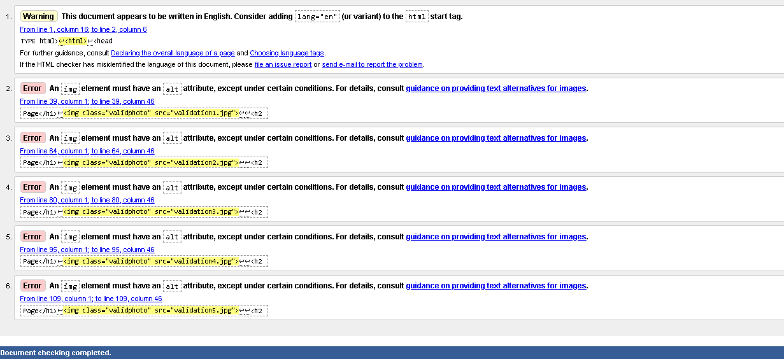

Introduction
I am a good learner with creativity sense, problem solving techniques and able to learn new things. I have always been deeply interested in IT field from early age. I am new learner in this field as i could not get enough knowledge about it in my high school. So, as a new learner i was facing problem in coding, web development, designing and debugging. I have gained basic knowledge in those topics within my 1st term.This is my first web page and i have learned many things from my mistakes too. I tried my best to make this web page and Mr.Ankit Thapa really has helped to solve my problems. I have learned about web development through internet also. I am glad to present my first web page and promise to get better at it.
#Home Page
Correction
1.(lang= "en")attribute should be used with html.
References
1.EasyTutorials, 2019. [Online]
Available at:
https://www.youtube.com/watch?v=wHFflWvii3M
[Accessed 24 Feb 2019].
(I have gained knowledge about developing menubar from this link.)
2.Lab, C., 2020. [Online]
Available at:
https://www.youtube.com/watch?v=4vgD6yhnNOI&t=316s
[Accessed 10 September 2020].
(I have learned to use gradient property with animation from this link.)
3.Divinector, 2018. [Online]
Available at:
https://www.youtube.com/watch?v=-4i8zbBcC7E&t=324s
[Accessed 14 june 2018].
(I have acquired knowledge of hover property from this link.)
#Portfolio Page
Correction
1.(lang= "en") attribute should be used with html tag.
2.(alt) attribute should be used with image tag.
References
1.123FreeVectors, 2016. [Online]
Available at:
https://www.123freevectors.com
/abstract-blue-waves-curved-lines-background-108339/
[Accessed 14 March 2016].
(This is link to background image used in all responsive pages.)
#Contact Page
Correction
1.(lang= "en") attribute should be used with html tag.
2.(cols=40) should be used instead of (cols=40rem) in textarea tag.
References
1.Anon., n.d. [Online]
Available at:
https://eskipaper.com/pc-backgrounds-8.html
(This is link to background image used in all pages.)
#CV Page
Correction
1.(lang= "en") attribute should be used with html tag.
2.(alt) attribute should be used with image tag.
References
1.Anon., n.d. [Online]
Available at:
https://www.cvplaza.com/cv-examples/good-bad-cv/
(I have taken ideas about creating CV from this link.)
#Site Report Page

Correction
1.(lang= "en") attribute should be used with html tag.
2.(alt) attribute should be used with image tag.
References
1.Lab, C., 2020. [Online]
Available at:
https://www.youtube.com/watch?v=4vgD6yhnNOI&t=316s
[Accessed 10 September 2020].
(I have learned to use gradient property from this link.)
2.vectors, F., 2018. wallpapersafari. [Online]
Available at:
https://wallpapersafari.com
/w/bYd6gH
[Accessed 3 January 2018].
(This is link to background image used in site report page.)